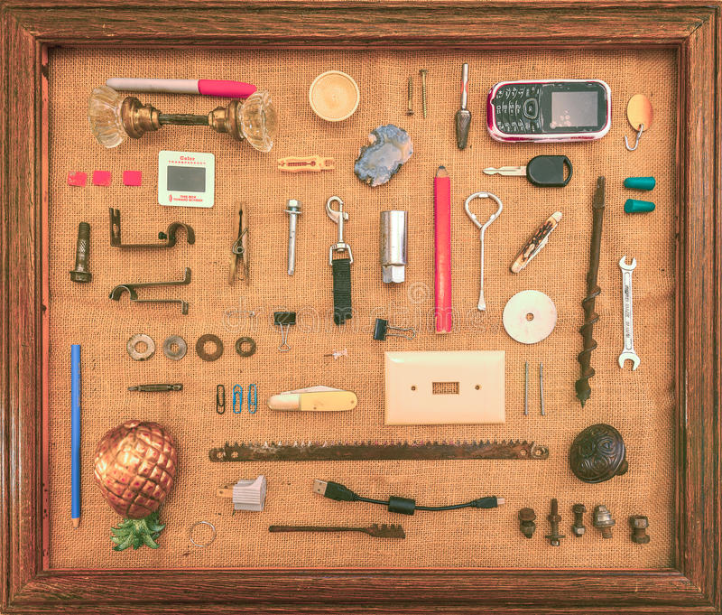

Back Button
Drawer 2

Tide stain stick
For emergencies. Should be moved to my purse.
Scissors
Super dull from years of use.
Zip ties
Does anyone even use zip ties anymore? For what?
Flashlight
Needed for when the wind knocks out the power.
Next button